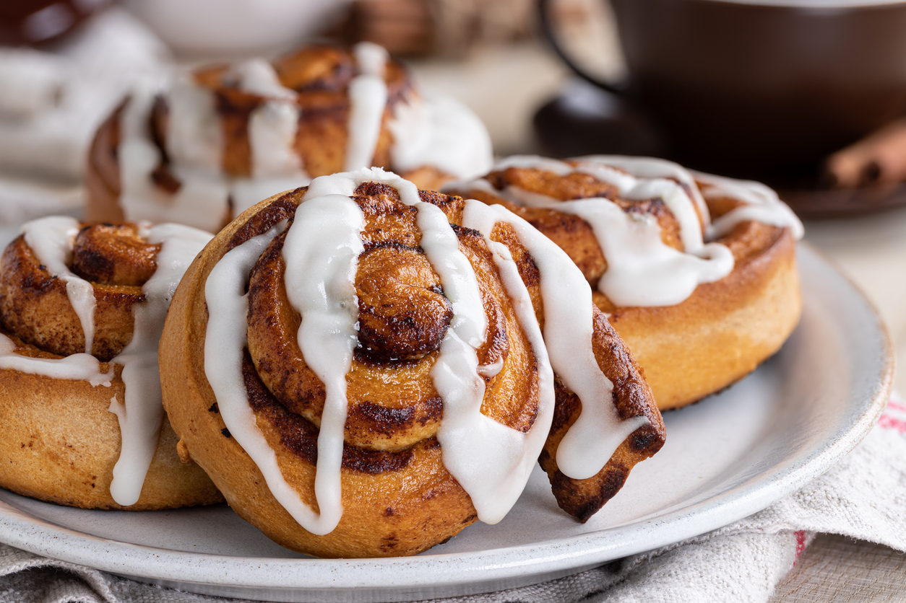

Home
Cinnamon Rolls
These cinnamon rolls are perfect for a sweet treat.

Cinnamon rolls are a beloved breakfast or dessert treat that's easy to make at home.
These fluffy, buttery rolls are filled with a sweet cinnamon-sugar mixture and topped with
a creamy glaze. They're perfect for sharing with family and friends, or enjoying on their own.
Whether you're making them for a weekend brunch or as a special treat, these cinnamon rolls
are sure to satisfy your sweet cravings.
Ingredients
- 1 cup warm milk
- 2 1/4 tsp active dry yeast
- 1/4 cup sugar
- 1 egg
- 1/2 cup butter, melted
- 3 cups all-purpose flour
- 1 tsp salt
- 1/2 cup sugar (for filling)
- 2 tbsp ground cinnamon (for filling)
- 1/4 cup butter, softened (for glaze)
- 1/4 cup powdered sugar (for glaze)
Instructions
- In a large bowl, combine warm milk, yeast, and sugar. Let it sit for 5 minutes until foamy.
- Add egg and melted butter to the yeast mixture.
- In another bowl, mix flour and salt. Gradually add the flour mixture to the wet ingredients.
- Knead the dough until smooth and elastic (about 8-10 minutes).
- Place dough in a greased bowl and let rise until doubled in size (about 1 hour).
- Punch down dough and roll out on a floured surface to form a rectangle.
- Mix sugar and cinnamon. Sprinkle over dough.
- Roll up dough tightly from one long side to the other.
- Cut into 12 equal pieces and place in greased baking dish.
- Let rise for 30 minutes until puffy.
- Bake at 375°F for 20-25 minutes until golden brown.
- Whisk together softened butter and powdered sugar for glaze.
- Drizzle glaze over warm cinnamon rolls and serve.
More Recipes